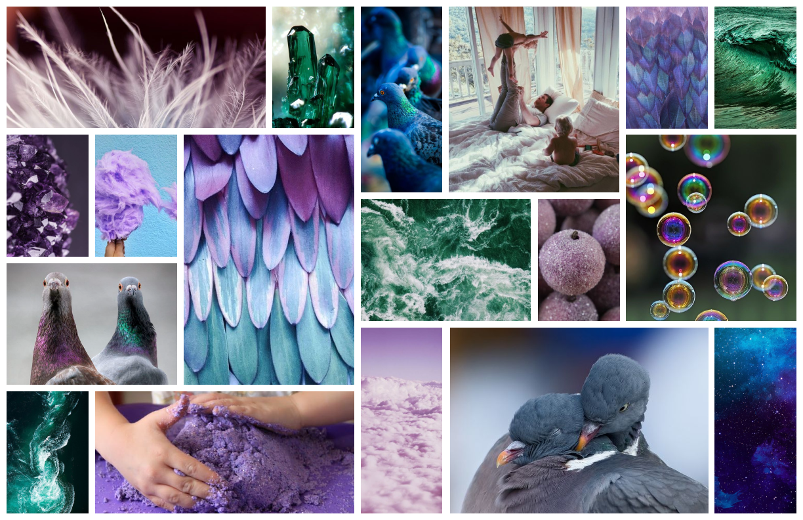

Problem
Most of us have cousins, nieces, nephews, and grandchildren who we don’t get to see as much as we like. Whether they live far away or our lives are just busy, our relationships can take a big hit. While it can be easier to keep up on our adult relationships through the myriad of social and communication apps available, that usually doesn’t work for kids. They usually don’t have a phone and even if they did, a lot of the social apps that are available aren’t safe for kids.
Solution
Coo provides a digital space for communication that is safe for kids. Some of the app features that protect kids are:
Password protection when entering and exiting the app Only parents are able to create contacts Activity logs for parents to view kids' activity within the app

Research & Discovery
Competitive Analysis
There are a lot of communication apps in the market and even some kids’ social media apps. However, there is really only one other app, Caribu, that is trying to connect kids with their loved ones.

Caribu
Caribu includes games and books that you can use during a video call, which can help keep kids interested. However, the games can be buggy and kids have full control to exit the games, which can be frustrating. There are no options for group calls, and no options for asynchronous communication.

Marco Polo
Marco Polo is great for asynchronous communication, but there are no options for true video calling and, again, it's not safe for kids.

Teleconferencing Apps
Teleconferencing apps like Skype, Zoom, and FaceTime are all great for video calls, especially for larger groups. However, there are no options for asynchronous communication and, again, they aren't safe for kids.
Competitive Analysis
Survey
This issue isn’t well documented, so conducting a survey lent a broader understanding of people’s experiences.
91%
have important relationships with kids (not including their own)
48%
want to be more connected in those relationships
100%
of parents would support a trusted family member or friend who wanted to connect more with their kids
75%
of parents would want to know what is going on during interactions
56%
of parents worry about their kids having access to their device
18%
of parents are concerned it would take a lot of time to facilitate these connections
Survey Results
User Needs
People want to be more connected
Parents want to keep their kids safe
Parents want to be kept in the loop
User Personas
The three user personas demonstrate the three main user types: adult, child, and parent.
Luke Reynolds
Parent
Wants his kids to have healthy relationships
Doesn't want his kids getting into trouble on a device
Worries about his kids missing family after moving away

Liam Reynolds
Child
Doesn't have his own phone yet
Misses his family members who live far away
Doesn't like to open up during group conversations
Marissa Ennis
Adult - Aunt
Feels disconnected from her nieces and nephews since they moved away
Wants her son to have a relationship with his cousins
Would like to get to know her girlfriend's family members more
User Personas
Information Architecture
User Stories
The user stories are broken down into priority, user need, user story, and conditions of satisfaction. Here is an example.
PRIORITY:
High
USER NEED:
Connect with a loved one
USER STORY:
As a user, I want to add a family member or friend as a contact so that myself and my children can connect with them easily.
CONDITIONS OF SATISFACTION:
Only adult profiles can add contacts
User profiles cannot be searched
Contacts must know each other personally in order to find each other's profiles
Contacts can be added to specific profiles and not others
User Stories
User Flows
Incorporating the user stories into user flows provides the structure and framework for the app. User flows also help determine the screens that will need to be built.
User Flows
Wireframes
Starting with physical sketches helps flesh out concepts quickly. Using pen and paper also keeps designs from becoming cemented prematurely because all sketches are throw-away work. Once all of the screens were sketched, the best ideas were put into digital form using Figma.

Wireframe Sketches
Digital Wireframes
Usability Testing
Testing at this stage is critical because this is where most errors will be discovered. There hasn’t been much time sunk into the designs, so there is still plenty of room for correction with minimal cost. If the first test is run with high fidelity mockups, it requires significantly more effort to make necessary changes.
Key Takeaways
First, adding a contact needed to be simplified. All of the users were confused by the process. I split the process up into two separate screens and decided that instead of using a user-generated username and keyword, every user would be issued an ID number.
The second takeaway was that some of the icons on the bottom navigation weren’t clear enough, specifically the ‘contact invitations’ icon. I simplified the icon, made them all larger, and added a text label.
Next, users had a hard time figuring out how to switch profiles. The original thought was that they would tap their profile image to switch, but about 50% of gave up unsuccessfully. I decided to use a clear “switch profile” button instead.

Some users weren’t sure how to create a new message. They didn't seem inclined to interact with the plus icon in the last slot of the thread. So I decided to use a more standard pattern and use a rounded plus button in the bottom right corner.

Creating a new message wasn't very well laid out. I decided to split the message types into three categories in the slider at the bottom - create, photo, and video.
Branding & Visual Design
Brand Characteristics
I started off my branding process with a mind mapping exercise. I noticed that the word bird kept coming up, so I decided to brand around the concept of messenger pigeons. They carry messages, just like the app. I drew out some of the words from my mind map to serve as brand characteristics:
Fun
Safe
Loving
Energetic
Bubbly
Kind
The name ‘Coo’ is the sound a pigeon makes and the color palette comes from the colors of the Blue Bar pigeon.
Typography
H1 Fredoka One 36px
H2 Fredoka One 24px
H3 Fredoka One 18px
H4 Muli Bold 14px
H5 Muli Light 14px
H6 Muli Light 10px
Because Coo is targeted toward kids as well as adults, the typography needed to be playful and elementary as well as clean and classic. Fredoka One and Muli are well-balanced between the young and mature.
Logo
Continuing with the concept of the messenger pigeon, rough ideas for the logo were sketched out and the strongest seemed to be an adorable, fat pigeon. However, it was too complex to be logo a mark. Instead, the pigeon was used as an illustration and just the beak was used as the logo mark. It also resembles a heart, which plays nicely into the brand characteristics of safe, loving, and kind.
High Fidelity Mockups
With the learnings from the first round of user tests and the branding elements ironed out, high fidelity mockups were created. The design was intended to appeal to a wide range of users. It incorporated a lot of energy through high contrast and intense colors to appeal to younger users as well as simplicity and polish to appeal to older users. The result is a dark design with layering, shadows, gradients, and bright pops of color.
Hi-Fi Mockups
Usability Testing
To ensure that the app design successfully meets the needs of all users, usability tests were conducted with six users - three adults and three children ages 7, 9, and 11. There were a few issues discovered throughout the tests.
Key Takeaways
First, users were still confused by the plus button on the thread. When you tapped that button, it expanded to show a video icon and a camera icon. Users understood that the video icon was for video calling and the camera icon was for photo messages, but when asked to send a video message, most tried the video icon again. So I decided to split them out. I moved the video call button up by the contact’s name and changed my icon for a new message.
Some users also had a hard time deleting a message. The original idea was to use a long press to bring up the delete icon. 50% of testers gave up unsuccessfully. So I decided to use a menu icon to bring up message options.
One of user couldn’t distinguish between the purple color that was being used as a highlight and the original white. I changed the color to the more vibrant teal instead of the purple.
Last, the prototype didn't include notification bubbles. I added those to guide users through the app to items that require attention.
Final Design & Conclusion
Final Design
The final design is clean and visually interesting and has been proven to be intuitive for users of varying ages and tech savvy.
Prototype
Conclusion
Some things that worked really well during this project were:
The frequency of usability testing provided a tight feedback loop
The branding process went smoothly
The structure of user stories worked well to guide the design
Coo connects loved ones, keeps kids safe, and keeps parents in the loop and the app is fun, safe, and intuitive.